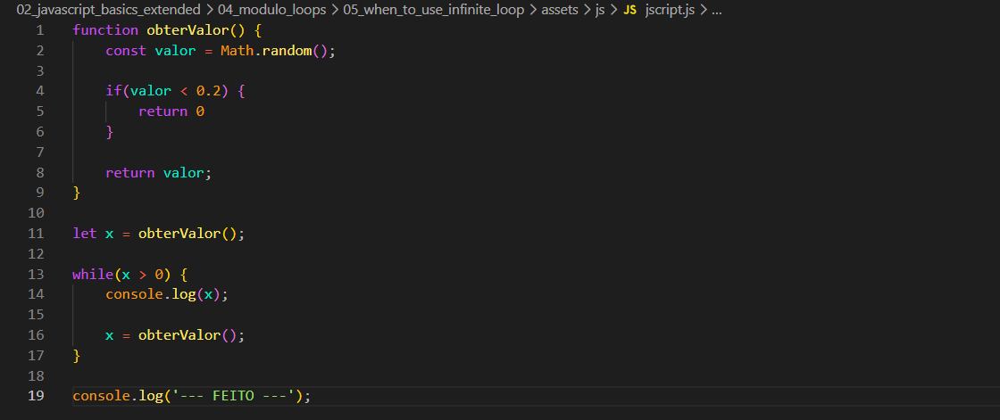
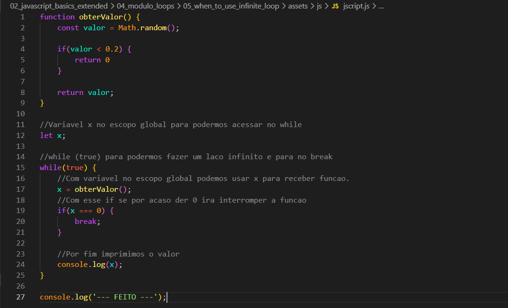

When To Use Infinite Loop
Intro
Uso para um laco de repeticao infinito.
Uso para um laco de repeticao infinito.
Aqui iremos criar uma funcao que se chama obterValor() apos isso criamos uma variavel valo que ira receber o metodo Math.random();. Apos isso criamos uma condicinal que checamos se o valor retornado pelo Math.random é < (menor) doque 0.2 e se sim retornamos 0, e se nao retornamos o valor de Math.random.
Depois criaremos uma nova variavel x que ira receber nosso resultado de function obterValor();, com isso criamos uma estrutura while e com isso adicionamos uma condicao enquanto x > 0, e enquanto o x maior que 0 iremos imprimir o valor de x e chamamos novamente o x = obterValor(). Com isso cada vez que nossa pagina se atualiza, tera um novo valor de x.
Ficando da seguinte forma:

Para esse caso podemos otimizar ele da seguinte forma:
